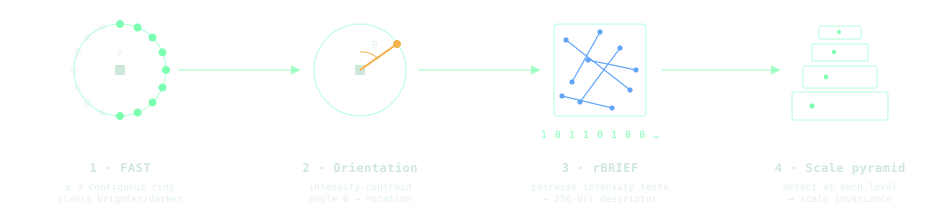
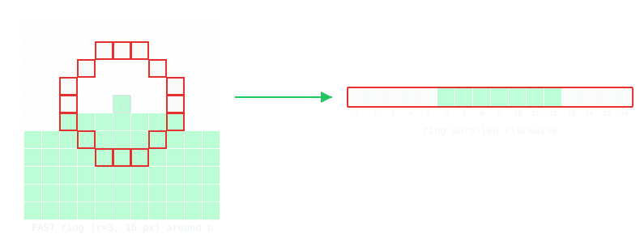
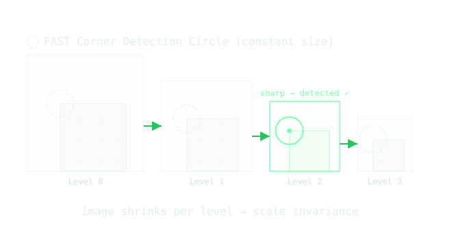
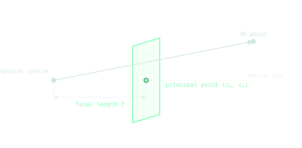

vSLAM
An interactive guide to Visual Simultaneous Location And Mapping
Abstract
Visual SLAM (Simultaneous Localization and Mapping) is a computer vision technique that allows a camera to estimate its motion while simultaneously building a 3D map of an unknown environment. It works by detecting and tracking visual features across images, estimating camera movement between frames and reconstructing scene structure from multiple views. vSLAM is widely used in robotics and autonomous navigation and relies only on a camera instead of depth sensors.
Introduction
There are many different algorithms and approaches yet the general pipeline looks like the following:
Run frame after frame, these steps are called visual odometry [1]: the camera is tracked while the map is built up as it goes. We focus on each step in turn, with interactive demos using OpenCV running directly in your browser.
Pipeline
1. Feature Detection
Feature detection finds distinctive, repeatable points in an image that can be re-identified across frames. Below you can run a feature detector live on your own camera feed:
How ORB finds and describes features
The demo above runs ORB (Oriented FAST and Rotated BRIEF) [2], a fast combination of a corner detector (FAST) [3] and a binary descriptor (BRIEF) [4]. This feature detection method consists of four distinct steps, as shown below:

- FAST corner detection: Look at a ring of 16 pixels around a candidate pixel \(p\).1 Each ring pixel of intensity \(I_x\) is classified against the centre intensity \(I_p\) and a threshold \(t\): \[
S_x = \begin{cases}
\text{brighter} & \text{if } I_x \geq I_p + t \\
\text{similar} & \text{if } I_p - t < I_x < I_p + t \\
\text{darker} & \text{if } I_x \leq I_p - t
\end{cases}
\] where \(I_p\) is the candidate’s intensity and \(t\) a fixed threshold (the
FAST THRESHOLDslider). \(p\) is a corner if \(\geq 9\) contiguous ring pixels are all brighter or all darker. Survivors are ranked by their Harris corner score [5] - how much the intensity changes around each point - and the best \(N\) (theMAX FEATURESslider) are kept.

- Corner Orientation: Each corner is assigned an angle using the intensity centroid method [6], which points from the patch centre toward its brightest side (the orientation line in the demo’s Rich keypoints view). Steering the descriptor by this angle \(\theta\) is what makes ORB rotation-invariant.
- BRIEF Descriptor: Take the \(31\times31\) patch centred on the corner. A fixed set of 256 pixel pairs \((a_i,b_i)\) - read from a precomputed lookup table2, already rotated to the corner’s angle \(\theta\) so the result is rotation-invariant - is sampled inside this patch. Each pair yields one bit by comparing intensity: \(\tau_i = 1\) if \(I(a_i) < I(b_i)\), else \(0\). Concatenating all 256 gives a 256-bit (32-byte) descriptor. Later, descriptors will be compared across frames to find correspondences - the same scene point seen in two images.
- Scale pyramid: Steps 1–3 run on each level of a pyramid of \(N\) (the
PYRAMID LEVELSslider) progressively downscaled images (ratio =PYRAMID SCALE FACTORslider). A feature is detected at whatever level it is sharpest, giving scale invariance - the fixed \(31\times31\) patch covers more of the scene on coarser levels.

2. Feature Matching
Once features are detected, they have to be matched across frames - locating the same real-world point seen from two different camera positions.
Below, the left panel is your live camera and the right is a frame from a moment ago; the lines link the keypoints ORB matched between them. Move the camera (or something it captures) slowly to watch it connect corresponding feature points.
How it works
Every keypoint carries its 256-bit descriptor (as described in the previous section). To match one from frame \(F_t\), we look for the most similar descriptor in the previous frame \(F_{t-1}\).
For binary strings, “similar” means a small Hamming distance [7] - the number of bits that differ:
\[ d_H(a, b) = \sum_{i=1}^{256} a_i \oplus b_i \]
In short, it uses XOR and a bit count, which are very cheap and quick instructions on the CPU. Each descriptor is then paired with its nearest neighbour, the one with the smallest \(d_H\).
The nearest neighbour can still be wrong, so weak matches are filtered out by doing a cross-check: the pair must agree both ways (\(A\!\to\!B\) and \(B\!\to\!A\)).
Visual explanation
The two images below each hold a corner and a fixed circle. Drag the corner to move it, or drag outside the dashed circle to rotate it.
That dashed circle is the descriptor patch - the only region compared.3 Since the descriptor is centred on the corner and rotation-invariant, the match holds as you move and rotate it - until you drag it near the circle. Once that intrudes on the patch, the bits flip and the match breaks (note: might not work on Safari).
3. Camera Motion Estimation
Now that we have matched features, we can work out how the camera moved between two frames.
Requirement: Camera calibration
To recover real motion we need a calibrated camera - one whose internal optics we’ve measured in advance. Calibration comes down to two things, gathered into the intrinsic matrix \(K\):
- the focal length \(f\) - how strongly the lens magnifies, i.e. how a pixel offset relates to an angle in the scene;
- the principal point \((c_x, c_y)\) - where the optical axis actually pierces the image (usually near the centre).
\[ K = \begin{bmatrix} f & 0 & c_x \\ 0 & f & c_y \\ 0 & 0 & 1 \end{bmatrix} \]
With \(K\) known, a pixel can be turned back into a real-world direction4, as visualized here:

How camera movement is defined
Between frame A (\(F_{t-1}\)) and frame B (\(F_t\)) the camera has moved and that motion is just two things:
- a rotation \(R\): how the camera turned
- a translation \(t\): which way it shifted
The scene below shows exactly that: the same camera at two positions, A and B. Drag to orbit, and move B with the sliders - the white arrow is \(t\) and the white arc is \(R\) (visible when you add rotation), the two quantities we’re after. The × on each image plane marks where the same feature point lands in each view - that’s a matched pair from the previous step.
Packing R and t into the essential matrix E
\(R\) and \(t\) are usually bundled into one 3×3 matrix, the essential matrix \(E\):
\[ E = [\,t\,]_\times \, R \]
where \(R\) is the rotation and \([\,t\,]_\times\) is the translation \(t\) written as the skew-symmetric matrix:
\[ [\,t\,]_\times = \begin{bmatrix} 0 & -t_z & t_y \\ t_z & 0 & -t_x \\ -t_y & t_x & 0 \end{bmatrix} \]
So \(E\) is just a compact way of writing where B sits relative to A. We never measure \(R\) and \(t\) directly - all we have are the ×’s, the pixel where each camera sees the same feature. A match gives a point \(x\) in frame A and its partner \(x'\) in frame B, and every correct match obeys one simple relation5:
\[ x'^{\top}\, E \, x = 0 \]
Each match gives one such equation. And although \(E\) has nine entries, only their ratios matter - its overall scale is unrecoverable (the same reason we can’t recover the length of \(t\)) - so there are really just eight unknowns to pin down. That’s why eight matches are enough to solve for \(E\) [8].6
Once \(E\) is known, it splits back into \(R\) and \(t\) - the motion we were after.
One catch: from a single camera the length of \(t\) can’t be recovered, only its direction - so the trajectory and map come out correct in shape but at an arbitrary overall scale.
4. Triangulation
We now know where the camera was for each frame (its \(R\) and \(t\)) and which pixels in the two views are the same feature (the matched ×’s). That’s everything we need to place the feature in 3D - by triangulation.
A single pixel fixes only a ray: back-projected from the camera centre, the true point lies somewhere along it at unknown depth. The same feature in the second view gives a second ray, and the two rays intersect at one point in space - the feature’s 3D position.
In the scene below, each camera back-projects its matched pixel into a ray (green from A, amber from B); where they meet is the 3D point. Drag to orbit and use the sliders to change the setup (match error is how far a feature’s measured pixel sits from its true spot since real matches are never exact, e.g. due to noise).
In practice the two rays almost never meet exactly. A pixel match is never perfect, so instead of crossing they pass near each other - add some match error and watch them skew apart. Triangulation then takes the midpoint of the shortest gap between them (a small least-squares problem), shown as the white estimate next to the true point.
Computing the feature point’s 3D coordinates
Through all previous steps we now have everything needed to compute a point’s location:
- \(K\): the \(3\times3\) intrinsic matrix (from calibration
- \(R_1, t_1\) and \(R_2, t_2\): the pose of each camera (from motion estimation)
- \(x_1 = (u_1, v_1)\) and \(x_2 = (u_2, v_2)\): the matched pixel in each image (from feature matching)
From the poses and intrinsics we build each camera’s projection matrix \(P = K\,[\,R \mid t\,]\), which is just the rule that maps a 3D point to its pixel:7
\[ x \simeq P\,X \]
We know \(x\) and \(P\) for both cameras and want the shared unknown \(X\). Together the two views give enough equations to solve for it: collecting them into one system and solving for the best-fit \(X\) is the Direct Linear Transform (DLT), done with a Singular Value Decomposition (SVD) [10]. Even though the two rays mostly never meet because of noise, SVD ensures that \(X\) lands at the best compromise between them. Doing this for every matched feature turns the 2D correspondences into a cloud of 3D points.
5. 3D Point Cloud Map
Triangulation gives 3D points from one pair of frames. A real sequence has hundreds of frames, and SLAM simply keeps doing this: for every new frame it estimates the camera’s pose, triangulates the features it shares with earlier frames, and drops the new 3D points into one shared world coordinate frame. The accumulated result is the map - together with the chain of poses, which is the camera’s trajectory.
Play the sequence below to watch it form: the camera moves along its path (green trail), and each step adds freshly triangulated points (green) to the growing cloud (blue). Drag to orbit the finished map.
BONUS - Loop Closure
Everything so far is visual odometry: the camera tracked frame by frame. And because every pose is estimated relative to the previous one, each frame’s small error piles onto all the earlier ones. Over a long path this drift bends the trajectory away from the truth - and when the camera revisits a place it saw early on, the points it re-triangulates land beside their originals instead of on them.
Loop closure fixes this in two steps:
- Recognise the place - match the current frame’s appearance against past keyframes [11]. A hit means “I’ve been here before.”
- Correct the loop - that match says the current pose is really the old one, so the accumulated error gets pushed back across every pose in between.
Back-calculating the poses
Say the loop has poses \(p_0, p_1, \dots, p_N\), and at \(p_N\) we recognise we’re observing the same place as back at \(p_0\). That lets us recompute \(p_N\) directly from \(p_0\) and the matched features - call it \(\hat{p}_N\). This fresh estimate is a single step from \(p_0\), so it carries no accumulated drift, yet it disagrees with the \(p_N\) we chained our way around to. That mismatch is the closing error:
\[ e = p_N - \hat{p}_N \]
We cancel it by spreading it over the loop, a little more at each pose the further along it is:
\[ p_i' = p_i - \frac{i}{N}\,e \]
The start (\(i=0\)) stays fixed, the end (\(i=N\)) lands exactly on its drift-free estimate \(\hat{p}_N\) so the loop shuts, and everything between shifts proportionally.8 Each map point moves with its pose, so the duplicates merge back together.
Drag the drift slider to send the estimate off course, then hit Close the loop to watch the correction propagate.
This is what makes it true SLAM: revisiting a known place lets the system correct everything in between, keeping the map globally consistent however long the camera roams. Modern systems such as ORB-SLAM [12], and its successor ORB-SLAM3 [13], are built on exactly this pipeline.
References
Footnotes
For speed, FAST first checks just 4 pixels (top, bottom, left, right of the ring); unless at least three already pass the threshold, the candidate is rejected without testing all 16.↩︎
The pair positions in the lookup table are not random, they were determined by the original authors to be high-variance and low-correlation.↩︎
The patch is a \(31\times31\) square, but only the inscribed circle is effectively used - rotating the sampling pattern keeps the same pixels only for a circular region, which is why the demo draws a circle.↩︎
An uncalibrated camera (no \(K\)) still works, but the motion can only be recovered up to an unknown distortion - real angles, shape, and scale are lost.↩︎
Here \(x\) and \(x'\) are normalized image coordinates - the pixel with the calibration divided out (\(K^{-1}\cdot\text{pixel}\)) - not raw pixels. Dividing \(K\) out is exactly what “calibrated” buys us.↩︎
If you are curious about how \(E\) is solved and why you actually only need five matches [9] you can check out Hartley & Zisserman, Multiple View Geometry in Computer Vision [10].↩︎
The \(\simeq\) means equal up to scale: \(P\,X\) gives the pixel’s direction in homogeneous coordinates, but its overall scale (the depth) is unknown.↩︎
Here \(p_i\) is just a position. Real poses also have rotation, which doesn’t subtract element-wise, so \(-\) and \(+\) really become the manifold operators \(\boxminus\) / \(\boxplus\).↩︎